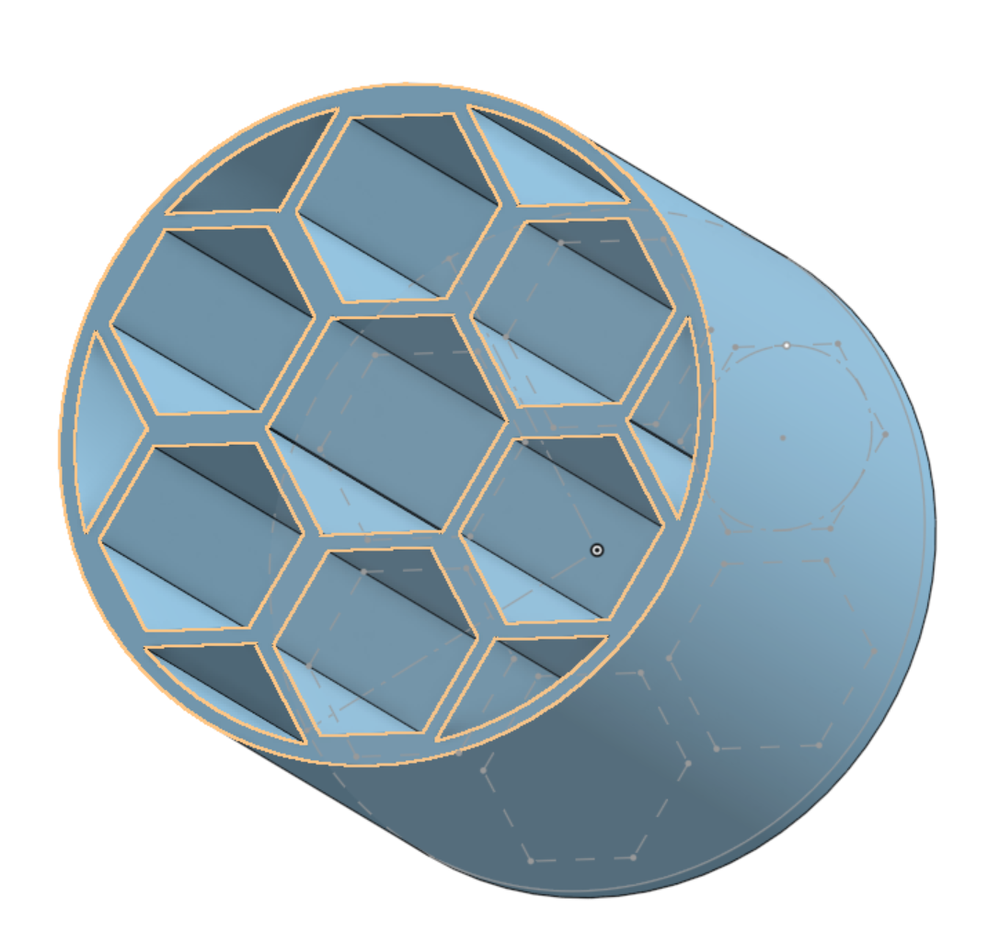
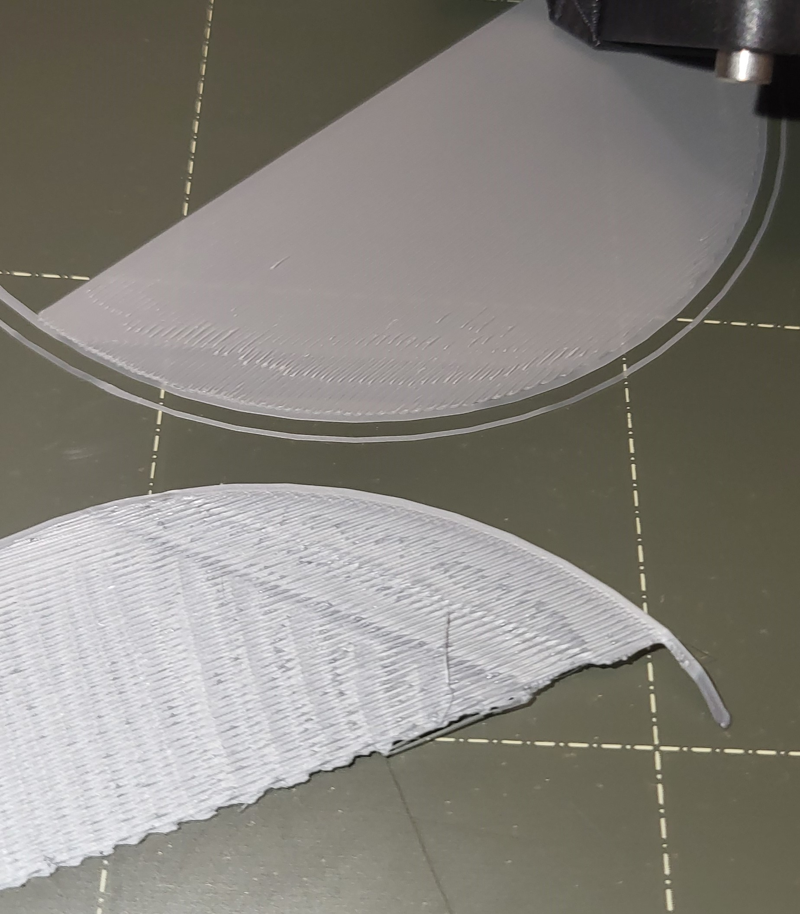
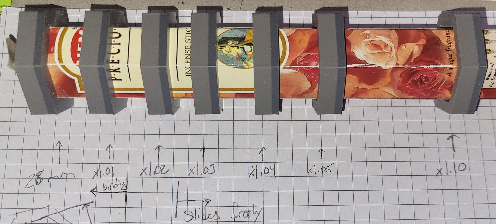
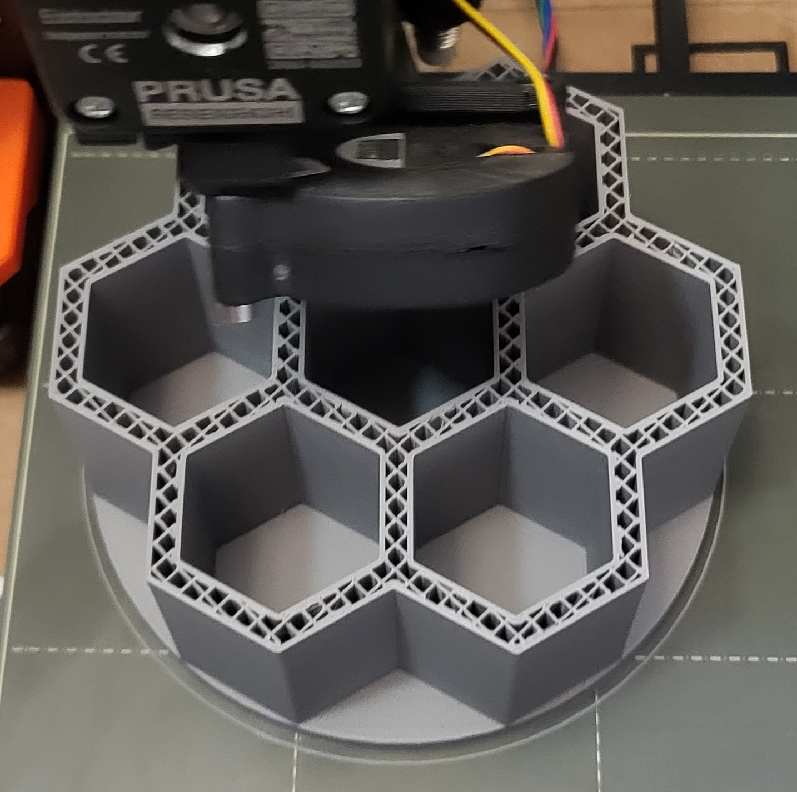
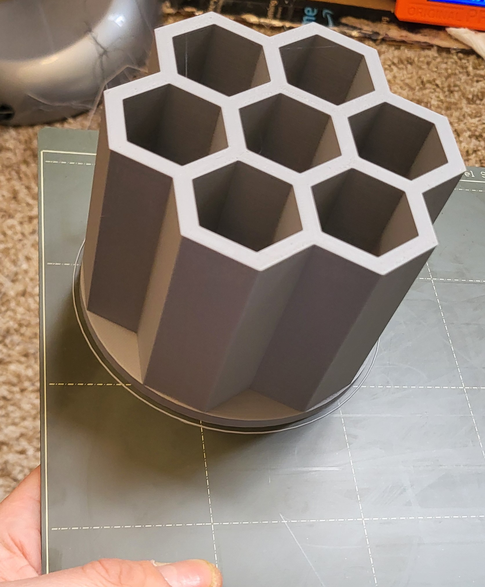
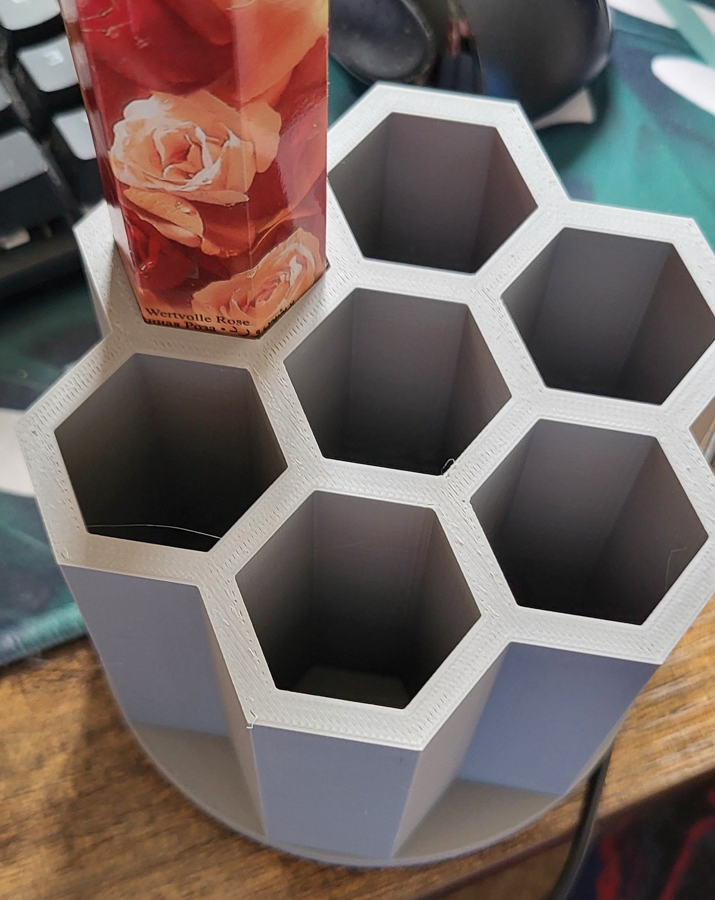
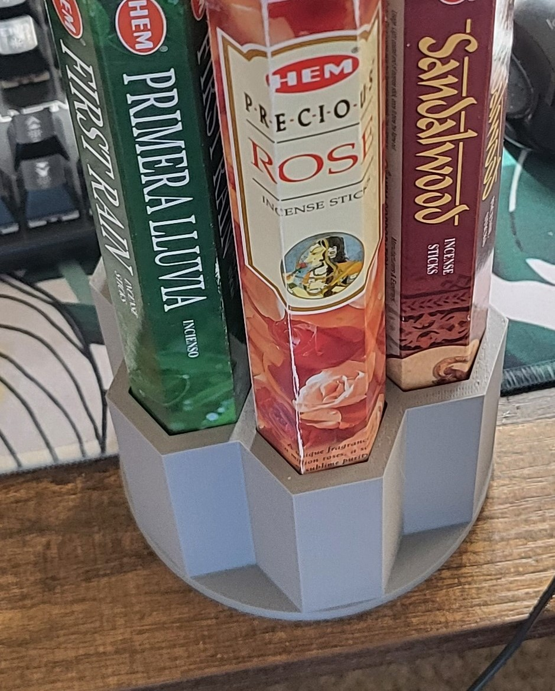
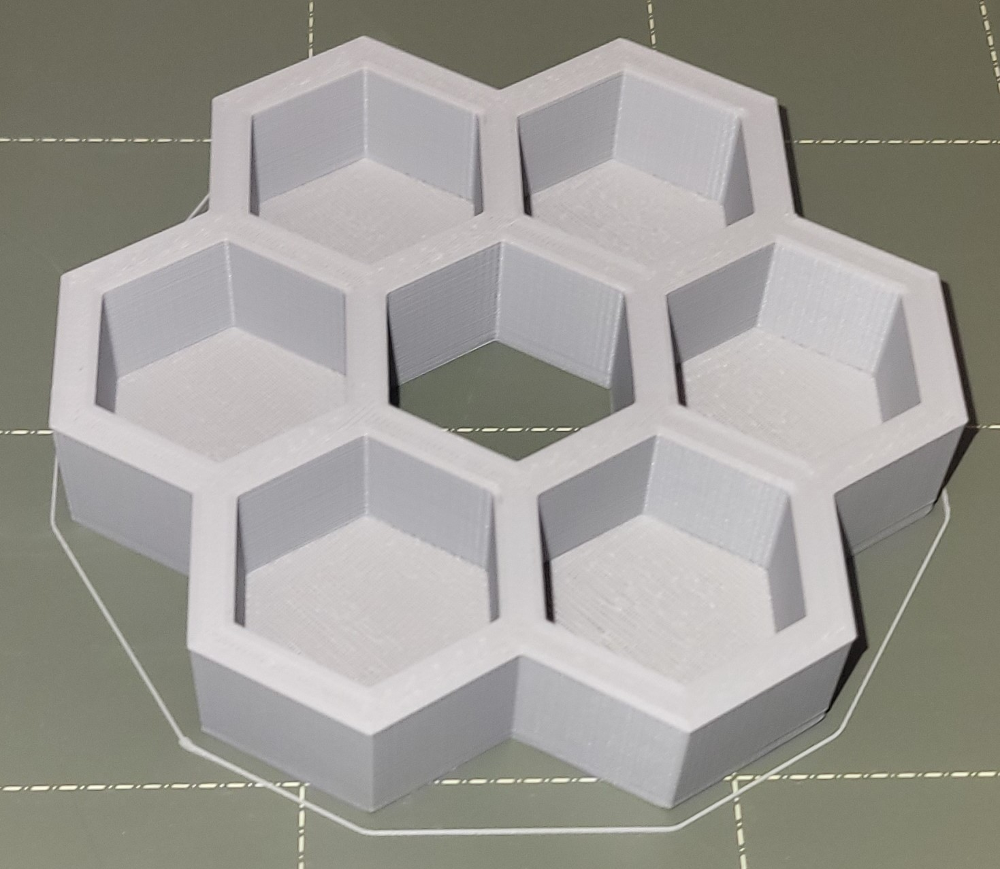
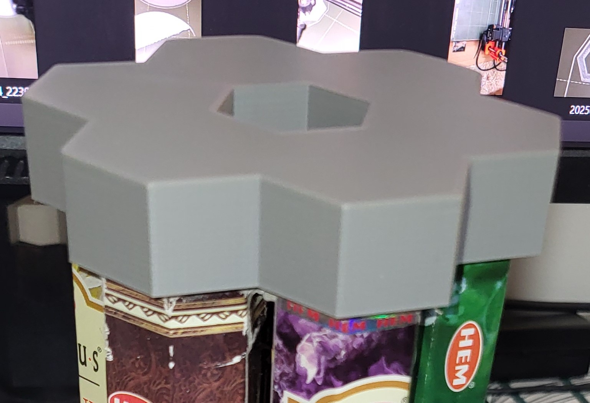
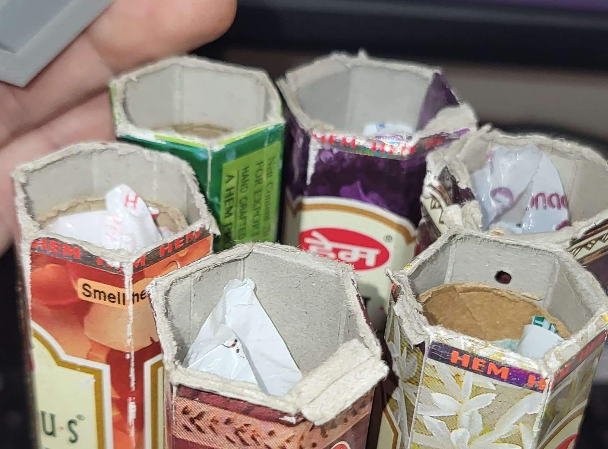

Problem
- Received a bunch of incense scents/flavors for Christmas
- No good way to store them, so they just sit in an old grocery bag
Goal
- Take up less floor space
- The tubes have a long aspect ratio so storing in a vertical orientation makes the best use of desk space
- Use hexagons
- Get better at 3D CAD
- Look nice
- Easy to use
- Tight fit
Details
- 6 hexagonal tubes
- 28.0 mm +/- 0.1
Plan
- Arrange in hexagon since there are 6 and the tubes are hexagons
Problems
- Print failure after filament swap
- Extruder/Filament feed gears were clicking due to exceeding force limits
- Hot End plugged up
- Opened up, cleaned out feed gears
- Ran nozzle/extruder really hot (285°C vs 210°C)
- Managed to refeed filament
- Printed clean-out print before restarting
Blessing in Disguise
Original Design - After the print failure, while troubleshooting the extrusion problem, realized poor design choices and decided to redesign to save material/print time
- Started with 5mm base plate, reduced to 3mm
- Removed any of the base that extends beyond the furthest edge of the tube holder walls
- Removed any walls that weren't holding the tubes
- Made shorter 100mm → 75mm
- Re-running the first layer calibration helped me discover my Z axis adjustment was off by 0.1mm, and changing from -0.850 → -0.750 improved my bed adhesion and first layer smoothness üëç
Bottom: before, Top: after

Tests
- Test tolerance to hexagon size for good fit
- Base: 28.0 mm
- Tests: [101%, 102%, 103%, 104%, 105%, 110%]
- 103% is a good rule of thumb for easy sliding, but the tubes are not perfectly regular hexagons, so more tolerance needed
- Best "feel" was 104%, easy to slide without a lot of play (feeling loose)
- Base: 28.0 mm
Print in progress

Finished Print

They fit!


Print lid/cap
The cap is the same as the bottom except without the circular base.
I removed the loose flaps from the tube, thinking it would improve the fit. It did a teensy bit but came with the massive downside of easily frayed cardboard tubes.


Next Iterations
- Cap fitment
- The cap tolerance is too tight (even though it is the same as the bottom) since all of the tubes need to slide in at once, rather than inserting one at a time
- Or maybe just need a spacer to hold the tubes in the right shape
- Aesthetics
- The top, bottom, or middle can easily be adorned with 3D printed shapes for improved aesthetics